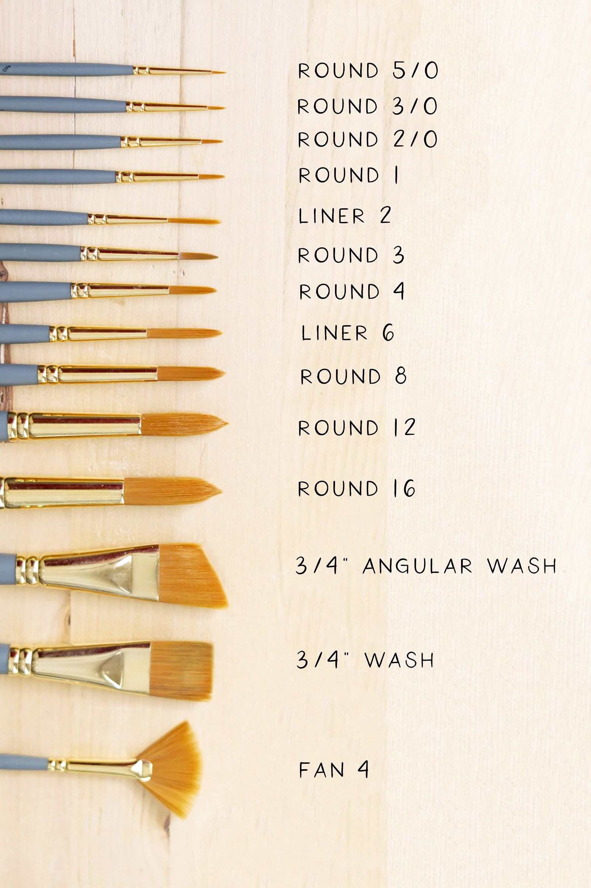
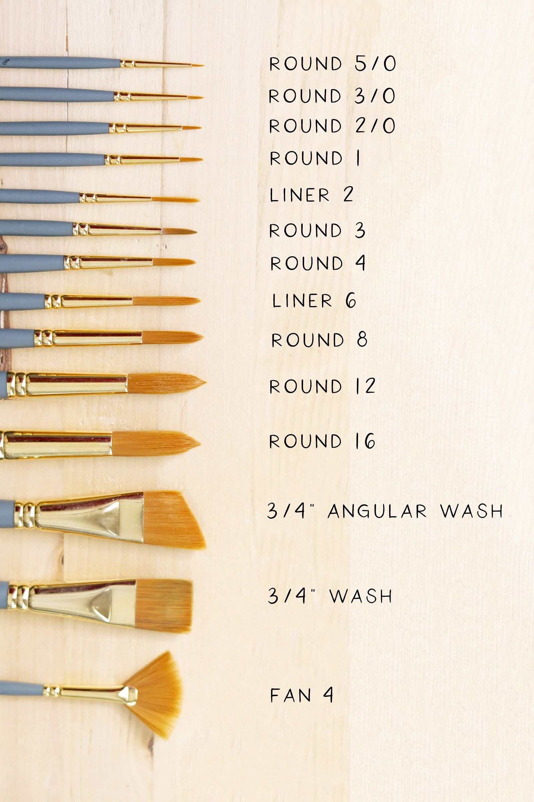

Painting Brushes
What is a Paint Brush?
A paintbrush is a brush used to apply paint or ink. A paintbrush is usually made by clamping bristles to a handle with a ferrule. They are available in various sizes, shapes, and materials. Thicker ones are used for filling in, and thinner ones are used for details. They may be subdivided into decorators' brushes used for painting and decorating and artists' brushes use for visual art.
The art of painting is a Magic and to make the Magic come true we need a Magic wand.So for Paintings the magic wand is our Paint Brush.For the Artists,the perfect paint brush is essential tool to paint.In this blog,we are going see the different types of brushes,brush sizes and their usage in detail.
What are the Parts of a Brush?
- bristles - also known as hairs. can be natural, synthetic, or combination of both.
- ferrule - the silvery bit that connects the bristles with the handle.
- crimp - the part of the ferrule that secures it to the handle.
- handle - usually made of wood or acrylic.
Types of Bristles
Natural Brushes
Natural brushes are divided into two categories, soft hair and hog bristles. At the high end, soft hair brushes are made from sable, while camel hair brushes are on the lower end, but aren’t actually made from a camel. Most often these bristles are made from ox, pony, goat, mongoose, or badger. Instead, hog bristle is stiffer, sturdier, and can hold a lot of paint.
Sable
The ultimate soft brush is made from the hairs on the tail of a sable marten; these taper naturally, so when they're put into a brush they form a point. Sable brushes are expensive, but are renowned for their softness, flexibility, and fine point. Kolinsky sable from Siberia has traditionally been considered the best hair for watercolor brushes. They are good for painting fine details and very thin paint.Hog/bristle
These brushes are the workhorse of the oil painter. The ultimate hard brush is made from the hairs on the back of a pig (hog), which are strong yet springy. The bristles have natural split-ends, which increases the amount of paint they hold. They are good for loading with a lot of paint and painting impasto style and are used for both oils and acrylics. They age well, becoming softer and more responsive with use.Camel
Brushes labeled 'camel' hair are really made from other types of soft hair. Camel hair is unsuitable for brushes because it is too woolly.Ox
Long, strong and springy hair. It is most often used in flat shaped brushes.Pony
Coarse hair that doesn't form a good point. Often used in cheaper watercolor brushes
Synthetic Brushes
Modern synthetic brushes are excellent and have the advantage of being cheaper than natural hair,they are easier to clean. As a downside, they don’t soak up quite as much pigment as natural brushes and aren’t quite as soft.
Synthetic brushes, man-made of either nylon or polyester filaments treated in various ways, are particularly good for acrylic paint, which can be hard on and damage natural hair brushes, and for large-scale work. In general, brushes made for acrylics can be used for oils and watercolor, but natural hair brushes made for oil and watercolor should not be used for acrylics (particularly expensive sable brushes) unless you are willing to replace them more often.
Types of Brushes
Round
Its is a pointed tip, long closely arranged bristles for detail.Ideal for adding fine detail, round brushes are a close gathering of bristles with a round or pointed tip. Round brushes are ideal for sketching and filling in smaller areas, as well as linework. By changing the pressure on the brush, it’s easy to vary from thin to thick lines. Round brushes work better with thinner paints.
Flat
It is also known as Wash Brush. Versatile with long or medium bristles, flat brushes can be used for everything from filling in large spaces to creating bold strokes, impasto, or washes. By using the edge of the brush, it’s also possible to make fine lines.
Bright
A bright brush is a short-bristled flat brush with edges that curve slightly toward the center. With shorter and stiffer bristles than a flat brush, these paintbrushes work well with heavy body paints when doing impasto and with thin paints to help drive the pigment into the canvas. However, they aren't good for wet on wet, as their stiff bristles can pull up the underlayer of paint.
Filbert
This flat brush with domed edges can be either medium or long-bristled. Filbert brushes take the best of round and flat brushes, meaning they can be used for detail as well as coverage.
Fan
The splayed out bristles of a fan brush can help create interesting textural effects on trees, clouds, and other natural elements. Natural bristles make this brush particularly effective for blending, feathering, and smoothing, while synthetic bristles work well for texture.
Angle
Angle brushes are flat with—you guessed it—an angled edge. They are especially useful for making curved lines and filling in corners where the tip can easily reach. But they also come in handy for applying paint to larger areas, making them another versatile tool.
Mop
Mop brushes come in larger sizes and have soft bristles with a rounded edge. They’re especially useful for watercolorists, as they are wonderful at creating washes of color. For those that work in layers, mop brushes can be used to apply a thin glaze of color over layers that are drying.
Rigger
These long, thin round brushes work well with fluid paint. Originally used to paint the rigging of ships in paintings, they are the fine liners of the brush world. Rigger brushes, also known as liner brushes, make long continuous strokes that are useful for painting fine details like branches, as well as for lettering and calligraphy.
Brush Sizes
Artists' brushes are usually given numbered sizes, although there is no exact standard for their physical dimensions. From smallest to largest, the sizes are: 20/0, 12/0, 10/0, 7/0, 6/0, 5/0, 4/0 (also written 0000), 000, 00, 0, 1, 2, 3, 4, 5, 6, 7, 8, 9, 10, 11, 12, 13, 14, 16, 18, 20, 22, 24, 25, 26, 28, 30, 2 inch, 4 inch, 6 inch, and 8 inch. Brushes as fine as 30/0 are manufactured by major companies, but are not a common size. Sizes 000 to 20 are most common.
 
